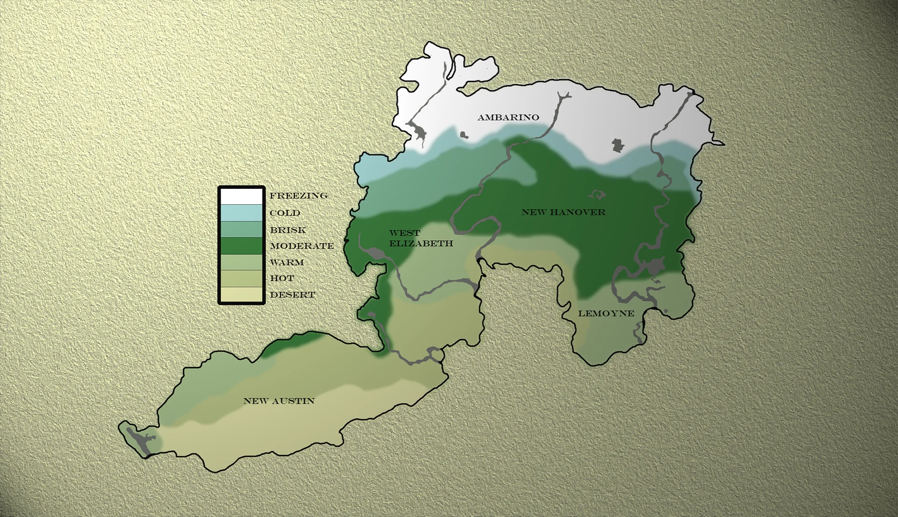
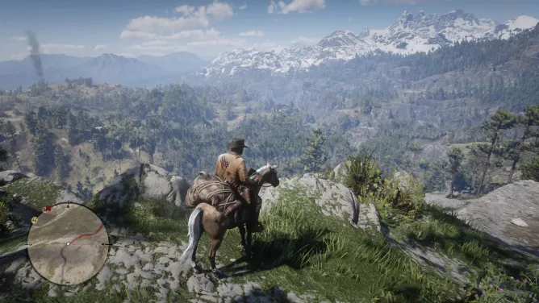
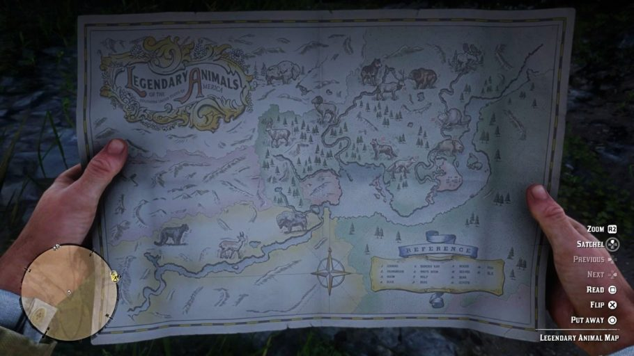

Desde o início, a Rockstar pretendia que Red Dead Redemption 2 fosse muito mais do que apenas uma sequência. Eles queriam criar um mundo vivo e interativo, onde cada detalhe, desde a movimentação dos personagens até a reação de animais selvagens, fosse cuidadosamente pensado. O escopo do projeto foi monumental. O mapa do jogo cobre cinco regiões distintas com biomas únicos, desde picos nevados até pântanos, cidades industriais e florestas densas. Para dar vida a esse mundo, os desenvolvedores implementaram:


